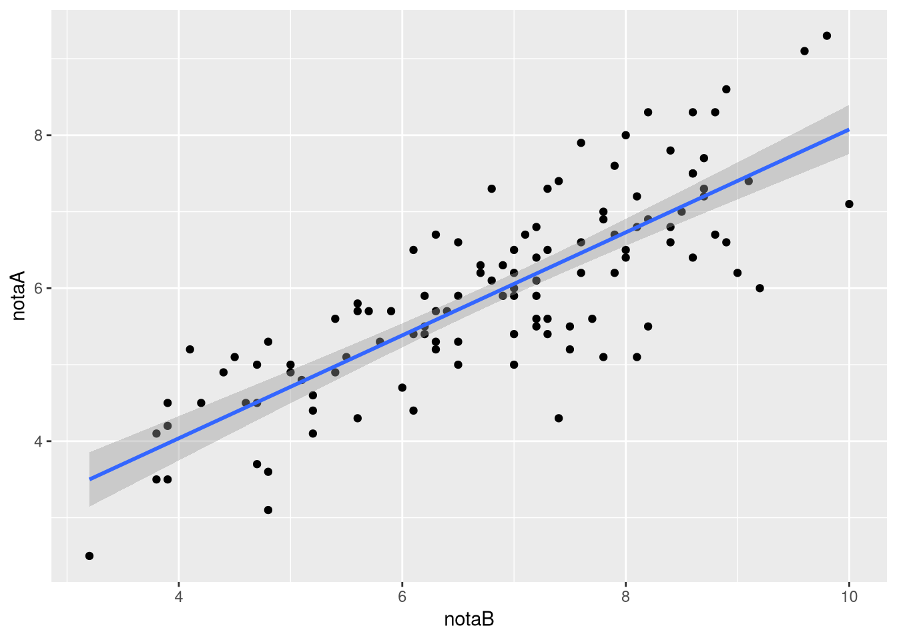

Este último capítulo cierra la tabla de decisión presentada en Selección del contraste estadístico con las filas que faltaban: aquellas en las que se quiere estudiar la relación entre dos variables cuantitativas, o predecir una variable cuantitativa (o cualitativa binaria) a partir de otra cuantitativa. La correlación y la regresión son temas amplios, con mucha teoría, propiedades y variantes detrás. Como ese desarrollo ya está hecho, y con detalle, en el Manual de Estadística del mismo autor, aquí no se repite: este capítulo se limita a situar cada contraste en la tabla de decisión y a mostrar el ejemplo mínimo de código en R necesario para aplicarlo sobre el conjunto de datos del curso. Para las definiciones formales, las fórmulas y las propiedades de estos contrastes, así como para el coeficiente chi-cuadrado y el coeficiente de contingencia entre dos variables cualitativas (mencionados pero no desarrollados en el capítulo introductorio de esta parte), acúdase al Manual.
16.1 Relación entre dos variables cuantitativas
Cuando ambas variables son cuantitativas y (aproximadamente) normales, la pregunta habitual es si existe una relación lineal entre ellas. El coeficiente de correlación de Pearson mide la fuerza y el sentido de esa relación lineal, y toma valores en el intervalo \([-1,1]\): cerca de \(1\) indica relación lineal positiva fuerte, cerca de \(-1\) relación lineal negativa fuerte, y cerca de \(0\) ausencia de relación lineal.
Cuando alguna de las variables es cualitativa ordinal, o cuando las variables son cuantitativas pero no puede asumirse normalidad, se utiliza en su lugar el coeficiente de correlación de Spearman, que mide la relación de orden (monótona) entre las dos variables en lugar de la relación estrictamente lineal. También toma valores en \([-1,1]\) y se interpreta igual.
Código
cor.test(df$notaA, df$notaB, method ="pearson")
Pearson's product-moment correlation
data: df$notaA and df$notaB
t = 14.709, df = 113, p-value < 2.2e-16
alternative hypothesis: true correlation is not equal to 0
95 percent confidence interval:
0.7367182 0.8651991
sample estimates:
cor
0.8104926
El coeficiente de correlación de Pearson entre notaA y notaB es \(r = 0.81\), y el contraste de hipótesis nula \(H_0: \rho = 0\) da un p-valor prácticamente nulo (\(p < 2.2 \times 10^{-16}\)), por lo que se rechaza la hipótesis nula: existe una relación lineal positiva fuerte y significativa entre las dos calificaciones.
Código
ggplot(df, aes(x = notaB, y = notaA)) +geom_point() +geom_smooth(method ="lm")

Diagrama de dispersión entre notaA y notaB, con la recta de regresión ajustada.
16.2 Regresión simple
Cuando el objetivo no es solo contrastar si existe relación, sino construir un modelo predictivo que permita estimar el valor de una variable cuantitativa a partir de otra, se recurre a la regresión lineal simple. El modelo ajusta la recta que mejor explica la variable dependiente en función de la independiente, y el contraste de hipótesis asociado a la pendiente indica si esa relación es estadísticamente significativa.
Código
modelo <-lm(notaA ~ notaB, data = df)summary(modelo)
Call:
lm(formula = notaA ~ notaB, data = df)
Residuals:
Min 1Q Median 3Q Max
-2.02596 -0.46667 0.03761 0.46790 1.43947
Coefficients:
Estimate Std. Error t value Pr(>|t|)
(Intercept) 1.34679 0.31938 4.217 5.02e-05 ***
notaB 0.67286 0.04575 14.709 < 2e-16 ***
---
Signif. codes: 0 '***' 0.001 '**' 0.01 '*' 0.05 '.' 0.1 ' ' 1
Residual standard error: 0.7501 on 113 degrees of freedom
(5 observations deleted due to missingness)
Multiple R-squared: 0.6569, Adjusted R-squared: 0.6539
F-statistic: 216.3 on 1 and 113 DF, p-value: < 2.2e-16
Por cada punto que sube notaB, notaA sube en promedio 0.673 puntos (\(\hat\beta_1 = 0.673\)), y esa pendiente es significativamente distinta de cero (\(p < 2\times10^{-16}\)), lo que confirma la relación lineal ya detectada con la correlación. El coeficiente de determinación, \(R^2 = 0.657\), indica que el modelo explica un 65.7 % de la variabilidad de notaA.
16.3 Regresión logística simple
Cuando la variable que se quiere predecir es cualitativa binaria (por ejemplo, aprobar o suspender una prueba) y la variable predictora es cuantitativa, el modelo lineal deja de ser adecuado y se sustituye por la regresión logística simple, que modela la probabilidad de la categoría de interés en función de la variable independiente.
Código
df <- df %>%mutate(aprobado =as.numeric(calificacionA =="Aprobado"))modelo_log <-glm(aprobado ~ notaE, data = df, family ="binomial")summary(modelo_log)
Call:
glm(formula = aprobado ~ notaE, family = "binomial", data = df)
Coefficients:
Estimate Std. Error z value Pr(>|z|)
(Intercept) 1.18250 0.40104 2.949 0.00319 **
notaE 0.03036 0.12613 0.241 0.80978
---
Signif. codes: 0 '***' 0.001 '**' 0.01 '*' 0.05 '.' 0.1 ' ' 1
(Dispersion parameter for binomial family taken to be 1)
Null deviance: 124.45 on 117 degrees of freedom
Residual deviance: 124.39 on 116 degrees of freedom
(2 observations deleted due to missingness)
AIC: 128.39
Number of Fisher Scoring iterations: 4
El coeficiente de notaE es positivo (\(\hat\beta_1 = 0.030\)), lo que indicaría que una nota más alta en la prueba E se asocia a una mayor probabilidad de aprobar la prueba A, pero el p-valor asociado (\(p = 0.81\)) está muy lejos de ser significativo: con estos datos no hay evidencia de que la calificación obtenida en la prueba E prediga el resultado (aprobado/suspenso) de la prueba A.
16.4 Cierre de esta parte del libro
Este libro ha recorrido dos preguntas distintas pero complementarias sobre un mismo estudio estadístico. La primera parte trató sobre el diseño: cómo se recogen los datos, según los distintos tipos de estudios descriptivos, transversales, de cohortes, de casos y controles, ecológicos, experimentales, cuasiexperimentales o basados en encuestas, y qué conclusiones de causalidad permite extraer cada uno. La segunda parte, cerrada con este capítulo, trató sobre el análisis: una vez recogidos los datos, cómo elegir el contraste de hipótesis adecuado según el número y el tipo de variables involucradas y la relación entre las poblaciones comparadas. Conviene no perder de vista que ambas preguntas son necesarias pero ninguna es suficiente por sí sola: un contraste estadístico perfectamente elegido y ejecutado sobre datos mal recogidos —con sesgos de selección, factores de confusión no controlados u otras amenazas a la validez discutidas en la primera parte— no produce conclusiones válidas, por muy pequeño que sea el p-valor obtenido. El buen análisis estadístico empieza en el buen diseño. Quien llegue a este capítulo sin haber pasado antes por el principio del libro puede retomarlo en Introducción a los tipos de estudios estadísticos, y quien busque de nuevo el mapa completo de contrastes puede volver a Selección del contraste estadístico.
Ejecutar el código
---title: Relación y predicción entre dos variableslang: es---```{r setup, include=FALSE}knitr::opts_chunk$set(echo =TRUE, message =FALSE, warning =FALSE)library(tidyverse)df <-read_csv("datos/datos-curso.csv")```Este último capítulo cierra la tabla de decisión presentada en [Selección del contraste estadístico](10-seleccion-contraste.qmd) con las filas que faltaban: aquellas en las que se quiere estudiar la **relación** entre dos variables cuantitativas, o **predecir** una variable cuantitativa (o cualitativa binaria) a partir de otra cuantitativa. La correlación y la regresión son temas amplios, con mucha teoría, propiedades y variantes detrás. Como ese desarrollo ya está hecho, y con detalle, en el [Manual de Estadística](https://aprendeconalf.es/estadistica-manual/) del mismo autor, aquí no se repite: este capítulo se limita a situar cada contraste en la tabla de decisión y a mostrar el ejemplo mínimo de código en R necesario para aplicarlo sobre el conjunto de datos del curso. Para las definiciones formales, las fórmulas y las propiedades de estos contrastes, así como para el coeficiente chi-cuadrado y el coeficiente de contingencia entre dos variables cualitativas (mencionados pero no desarrollados en el capítulo introductorio de esta parte), acúdase al Manual.## Relación entre dos variables cuantitativasCuando ambas variables son cuantitativas y (aproximadamente) normales, la pregunta habitual es si existe una **relación lineal** entre ellas. El coeficiente de correlación de Pearson mide la fuerza y el sentido de esa relación lineal, y toma valores en el intervalo $[-1,1]$: cerca de $1$ indica relación lineal positiva fuerte, cerca de $-1$ relación lineal negativa fuerte, y cerca de $0$ ausencia de relación lineal.Cuando alguna de las variables es cualitativa ordinal, o cuando las variables son cuantitativas pero no puede asumirse normalidad, se utiliza en su lugar el coeficiente de correlación de Spearman, que mide la relación de orden (monótona) entre las dos variables en lugar de la relación estrictamente lineal. También toma valores en $[-1,1]$ y se interpreta igual.```{r}cor.test(df$notaA, df$notaB, method ="pearson")```El coeficiente de correlación de Pearson entre `notaA` y `notaB` es $r = 0.81$, y el contraste de hipótesis nula $H_0: \rho = 0$ da un p-valor prácticamente nulo ($p < 2.2 \times 10^{-16}$), por lo que se rechaza la hipótesis nula: existe una relación lineal positiva fuerte y significativa entre las dos calificaciones.```{r}#| fig-cap: "Diagrama de dispersión entre notaA y notaB, con la recta de regresión ajustada."ggplot(df, aes(x = notaB, y = notaA)) +geom_point() +geom_smooth(method ="lm")```## Regresión simpleCuando el objetivo no es solo contrastar si existe relación, sino construir un **modelo predictivo** que permita estimar el valor de una variable cuantitativa a partir de otra, se recurre a la regresión lineal simple. El modelo ajusta la recta que mejor explica la variable dependiente en función de la independiente, y el contraste de hipótesis asociado a la pendiente indica si esa relación es estadísticamente significativa.```{r}modelo <-lm(notaA ~ notaB, data = df)summary(modelo)```Por cada punto que sube `notaB`, `notaA` sube en promedio 0.673 puntos ($\hat\beta_1 = 0.673$), y esa pendiente es significativamente distinta de cero ($p < 2\times10^{-16}$), lo que confirma la relación lineal ya detectada con la correlación. El coeficiente de determinación, $R^2 = 0.657$, indica que el modelo explica un 65.7 % de la variabilidad de `notaA`.## Regresión logística simpleCuando la variable que se quiere predecir es cualitativa binaria (por ejemplo, aprobar o suspender una prueba) y la variable predictora es cuantitativa, el modelo lineal deja de ser adecuado y se sustituye por la regresión logística simple, que modela la probabilidad de la categoría de interés en función de la variable independiente.```{r}df <- df %>%mutate(aprobado =as.numeric(calificacionA =="Aprobado"))modelo_log <-glm(aprobado ~ notaE, data = df, family ="binomial")summary(modelo_log)```El coeficiente de `notaE` es positivo ($\hat\beta_1 = 0.030$), lo que indicaría que una nota más alta en la prueba E se asocia a una mayor probabilidad de aprobar la prueba A, pero el p-valor asociado ($p = 0.81$) está muy lejos de ser significativo: con estos datos no hay evidencia de que la calificación obtenida en la prueba E prediga el resultado (aprobado/suspenso) de la prueba A.## Cierre de esta parte del libroEste libro ha recorrido dos preguntas distintas pero complementarias sobre un mismo estudio estadístico. La primera parte trató sobre el **diseño**: cómo se recogen los datos, según los distintos tipos de estudios descriptivos, transversales, de cohortes, de casos y controles, ecológicos, experimentales, cuasiexperimentales o basados en encuestas, y qué conclusiones de causalidad permite extraer cada uno. La segunda parte, cerrada con este capítulo, trató sobre el **análisis**: una vez recogidos los datos, cómo elegir el contraste de hipótesis adecuado según el número y el tipo de variables involucradas y la relación entre las poblaciones comparadas. Conviene no perder de vista que ambas preguntas son necesarias pero ninguna es suficiente por sí sola: un contraste estadístico perfectamente elegido y ejecutado sobre datos mal recogidos —con sesgos de selección, factores de confusión no controlados u otras amenazas a la validez discutidas en la primera parte— no produce conclusiones válidas, por muy pequeño que sea el p-valor obtenido. El buen análisis estadístico empieza en el buen diseño. Quien llegue a este capítulo sin haber pasado antes por el principio del libro puede retomarlo en [Introducción a los tipos de estudios estadísticos](01-introduccion.qmd), y quien busque de nuevo el mapa completo de contrastes puede volver a [Selección del contraste estadístico](10-seleccion-contraste.qmd).